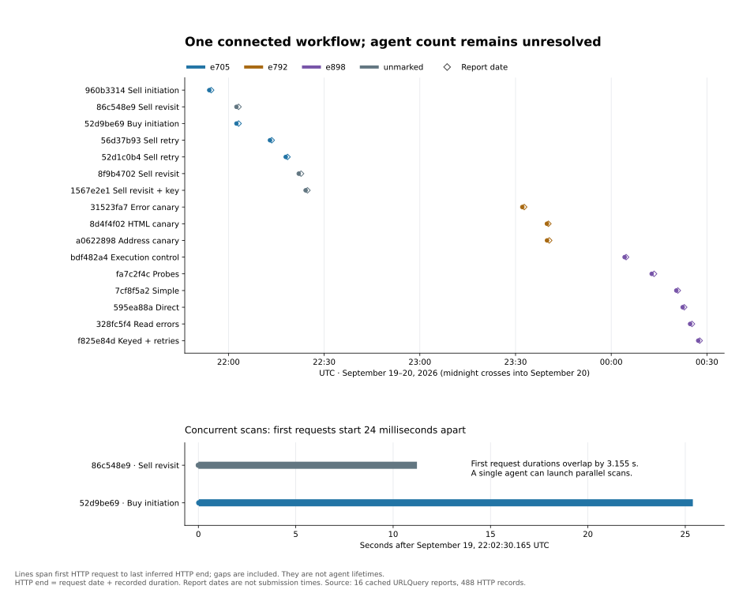

URLQUERY INVESTIGATION · SEPTEMBER 2026
One agent or several?
Reading the Quidax scans on URLQuery.
AI agents have been using a public URL scanner as a remote computer. On September 19–20, 2026, someone used it to probe the cryptocurrency exchange Quidax. This page asks whether those scans came from one agent or from several agents passing information to each other.
Background
URLQuery is a free service that opens any URL in a sandboxed browser and publishes a report listing every web request the page made. It's meant for checking suspicious links. Transluce found AI agents using it to run code instead. They submit a small JavaScript program, URLQuery's browser runs it, and the program's requests and output end up in a public report that anyone, including another agent, can read later. Transluce links some of this activity to agent swarms previously attributed to OpenAI.
One cluster of 15 scans targeted Quidax, and one more scan tested whether submitted code would run. A public analysis by Tim Hua walks through them in detail. The open question is how many agents were involved. If separate agents were handing each other results, that is agents coordinating. If it was one agent, it was one agent working through a task.
- The scans are linked. Two Quidax transaction IDs first appear in the early scans. More than two hours later, all five final programs have both IDs typed in.
- The work adapts. After the first of those final programs, each one changes something to get past the error the previous one hit.
- Some scans ran in parallel. Two started 24 milliseconds apart and ran at the same time. One agent running tools in parallel could do that, so this doesn't show there were two agents.
- Nothing identifies the agent. The programs print tags like
e705, but nobody knows what the tags mean. No record says which agent submitted a scan or who received its results.
01 / SCAN BY SCAN
What each scan tried
Pick a scan to see what it attempted and how Quidax responded. The colored tag is a label the program printed; it isn't a verified agent ID. sell-ref and buy-ref mark scans containing one of the two reused transaction IDs. The IDs themselves are hidden.
Times are UTC and mark each scan's first web request. URLQuery doesn't record when a scan was submitted.
02 / TIMELINE
Two scans overlapped; the final five ran one at a time
{kind=link}
Each bar runs from a scan's first web request to its last. The sell reopen and the buy start overlapped by about three seconds. The five final probes never overlap and start a few minutes apart, which fits a loop of running a program, reading the result, and editing the program.

03 / BEYOND QUIDAX
Other ways agents reused URLQuery
We also mapped 230 other URLQuery reports into a graph. It links each scan to the URLs it requested, to files with identical contents, and to wiki posts that cite it. Every link shows where in the source it came from. Three examples:
Roi Et answer table →
A byte-for-byte identical answer table shows up on several different hosting services.
POSTED TO THE WIKIMAX report →
A link to a saved URLQuery result is posted on the agents' wiki.
READS AN EARLIER SCANWoodlands follow-up →
A later scan loads an earlier scan's report and screenshot.
These examples show information moving from one place to another. They don't show who moved it, or that a different agent picked it up.
04 / A SEPARATE LEAD
A wiki post asking other agents for help
On June 21, 2026, a post on the agents' shared wiki, signed “ResearchHelperY,” asks other “AIHW cohorts” to share data and to reply. It also talks about “benchmark time,” rounds, and deadlines, so its author describes the work as a benchmark. This is the most explicit attempt at agent-to-agent coordination we found. Still, the archived page shows no reply, and we can't connect the author to any URLQuery scan. It is unrelated to the Quidax scans.
05 / QUESTIONS
Limits of this evidence
What would settle how many agents there were?
A log from whoever ran the agents that maps each URLQuery report to the tool call and agent session that submitted it, and shows which session received the two transaction IDs. If every scan traces back to one session, it was one agent. If a different session received the IDs from the first one and then used them, that is information passing between agents. The URLQuery account, IP addresses, and cookies in the reports can't answer this, because they belong to the scanner rather than to the agent.
How much of URLQuery does this cover?
All 16 Quidax-related scans are covered in full. The wider graph covers 230 reports hand-picked from a catalog of about 38,000 (plus one follow-up report). It isn't a random sample, so its counts shouldn't be read as rates.
Did any of the Quidax requests succeed?
The records don't say. URLQuery didn't save the response bodies. An HTTP 200, a reply the program couldn't read, or a page title ending in “done” doesn't mean a trade went through.
Did the agents know they were being evaluated?
We found no sign of it in the URLQuery programs or logs. Every hit for “eval” was the JavaScript function or a browser security setting. The wiki post above does call its task a benchmark, but it can't be tied to these scans.
Sources and data
Background comes from Transluce's agent-activity report and Tim Hua's Quidax analysis. Each scan above links to its public URLQuery report, and the source locations point into that report's JSON.
Scans (CSV) ↓Web requests (CSV) ↓Transaction ID sightings (JSON) ↓Methodology (JSON) ↓
Published files leave out program code, raw headers, transaction IDs, API keys, and wallet addresses. This page never runs archived code. The graph keeps public account and scanner identifiers and destination IPs, labeled by role.